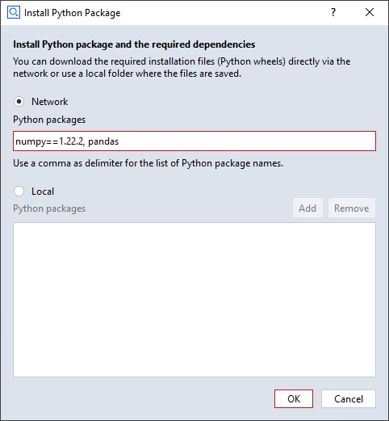

Using Add-on Manager
Script Editor and Package Manager have been integrated as the Add-on Manager. Here you can write Python scripts, add/remove contents, create/edit and publish Add-ons.
Add-on Manager Layout

Add-on Explorer
Installed Add-ons and being edited Add-ons are displayed in the Explorer.
Installed
: All of the installed Add-ons (System, User, Public) are listed and these are not editable. If you click RMB on an installed Add-on, you can select “edit”, “uninstall”, or “publish” the Add-on.
Being Edited
: Being edited Add-ons are listed in this category and you can add or remove contents to them. If you click RMB on a being edited Add-on, you can select “complete the edit” or “delete”.
Contents Provider
Here are contents from the current project which can be included in an Add-on. Contents can be moved by dragging and dropping between contents provider and a being edited Add-on. For more information about contents providers, please see the Add-on Format documentation.
Top of Display
The name of the selected object in the Add-on explorer is displayed.
Tool Bar
Depending on the type of the selected object, the following buttons are shown:
Script object - Save | Record Run Stop | Expand/Collapse
Editable object - Save
Others - None
Editor
The content of the selected object is displayed and if it is an editable object, you can edit it.
Output Window
The output of the executed script is displayed here.
Creating a new Add-on
Click RMB on the header of Being Edited category or in an area of the Add-on explorer where no object is selected > New Add-on
An Add-on being edited will be created, including default folders and files.
üõà Default folders and files of an Add-on

Writing Python scripts
New folder or script
Click RMB on the ‘scripts’ folder of an Add-on being edited > New Folder/Script
Install Python packages
Python packages can be installed to the Add-on and the installed python packages are only valid for scripts in the same Add-on. This concept is like in Conda or VirtualEnv. If you click RMB on the ‘scripts’ folder or ‘modules’ folder and select ‘Install Python Packages…’, the dialog for the installation will be popped up.
from Network
The package list from network must be separated with a comma.
To install the packages of a specific version, write the version after “==”. ex) numpy==1.22.0

from Local
Python wheel files (*.whl) can be added or removed.
Adding and removing contents
Contents can be added and removed between Contents Provider and an Add-on being edited by dragging and dropping.
Moving contents between Add-ons being edited is also supported.

Completing the edit
Click RMB on the Add-on being edited > completing the edit
If the Add-on has not yet been installed and
you are using the public folder, the dialog for selecting a location to install the Add-on will be popped up.
you are not using the public folder, the Add-on will be installed in the user folder automatically.
If the Add-on has already been installed, the Add-on will be overwritten at its original location.
The Add-on being edited will be removed after completion and the completed Add-on will be updated in the Installed category. Completing the edit is not available for external folders. More information about external folders can be found here.
Editing an installed Add-on
Click RMB on the installed Add-on > Edit
System Add-ons are not editable and protected Add-ons can be edited only if the given password is correct. If the installed Add-on is being edited, all contents are grayed out and cannot be selected.
Publishing an Add-on
Click RMB on the installed Add-on > Publish
Export
Save the selected Add-on as a .package file.
Upload
Upload the selected Add-on into the Zeiss Quality Software Store. The uploaded Add-on will be queued into the staging area and will be release after approval.
Add-ons from External Folder
Opening and deleting External Folder
External Folder enables the user to run scripts from a path of his/her own choice. More than one external folders can be added.
Opening
Click RMB in an area of the Add-on Explorer where no object is selected > Open External Folder…
Deleting
Click RMB on the external folder you want to delete > Delete…
External folder is deleted from the Add-on Explorer but the contents remain in the file system.
Creating Add-ons in External Folder
Creating a new Add-on in the external folder
Click RMB on the External Folder > New Add-on
“Completing the edit” is not supported for Add-ons from external folders, however they can be published, although they are considered still to be work in progress.